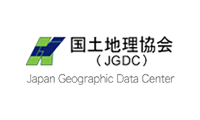
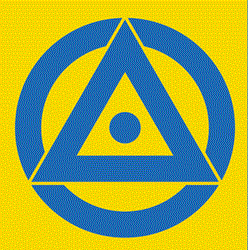
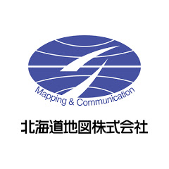

第30期（2021～2022年度） 日本地図学会役員・評議員
会長 ： 熊木洋太
会計監査 ： 菊池眞一 滝沢由美子
常任委員長 ： 卜部勝彦
副常任委員長： 宇根 寛
常任委員 ： 浅野晋一 伊藤香織 宇根 寛 遠藤宏之 太田 弘 岡谷隆基 落合康浩 河合豊明 黒木貴一
小泉 諒 近藤賀誉 鈴木厚志 田中 圭 田中宏明 中島 円 藤田秀之 古橋大地 三橋浩志
評議員 ： 浅野晋一 畔田豊年 荒堀智彦 有川正俊 石川 剛 石川 初 伊藤香織 伊藤智章 今尾恵介 上田秀敏
碓井照子 宇根 寛 烏山芳織 卜部勝彦 遠藤宏之 太田 弘 大西宏治 岡谷隆基 岡本耕平 小口 高
落合康浩 小野寺淳 梶村 徹 春日 茂 亀井啓一郎 小林岳人 河合豊明 河村克典 黒木貴一 小荒井衛
小泉 諒 小林 茂 小林政能 近藤賀誉 酒井拓也 佐藤 潤 佐藤崇徳 佐藤俊明 志村 喬 新垣紀子
鈴木厚志 高橋成雄 高橋美江 田賀 傑 立岡裕士 田中 圭 田中宏明 千葉達朗 塚田野野子 戸井田克己
長岡正利 中島 円 中村和彦 中村 剛 野尻琢也 野々村邦夫 芳賀 啓 長谷川均 菱山剛秀 藤田秀之
古橋大地 星埜由尚 増山聖子 政春尋志 丸山智康 水谷一彦 三橋浩志 目代邦康 村越 真 八島邦夫
矢野桂司 若林芳樹 渡辺理絵
各委員会委員：2022.4.6現在（◯：委員長、副：副委員長）
| 各委員会 | 担当常任委員 | 委員 |
|---|---|---|
| 総務委員会 | ◯田中宏明 落合康浩 | 烏山芳織 中岡裕章 |
| 会計委員会 | ◯藤田秀之 田中 圭 | |
| 編集委員会 | ◯岡谷隆基 小泉 諒 中島 円 三橋浩志 |
(副)上田秀敏 新垣紀子 川井孝之 小林政能 佐藤 潤 塚田野野子 菱山剛秀 |
| 集会・企画委員会 | ◯大田 弘 浅野晋一 河合豊明 近藤賀誉 黒木貴一 鈴木厚志 |
石川 初 齊藤忠光 大道寺覚 千葉達郎 吉田桃子 |
| 広報・IT委員会 | ◯古橋大地 遠藤宏之 中島 円 | (副)荒堀智彦 太田 弘 河合豊明 近藤賀誉 丸山智康 吉田魁人 吉田桃子 |
| 防災委員会 | ◯宇根 寛 遠藤宏之 黒木貴一 | 小荒井衛 古橋大地 |
| 連携渉外委員会 | ◯伊藤香織 | 若林芳樹 小荒井衛 |
| 瀬戸玲子基金委員会 | (副)三橋浩志 宇根 寛 岡谷隆基 | ◯滝沢由美子 |
特別会員
朝 日 航 洋 (株)
Aero Asahi Corporation測量､GIS､空中写真､システム開発、建設コンサルタント､リモートセンシング
アジア航測(株)
Asia Air Survey Co., Ltd.測量､GIS､環境調査､防災調査・計画、道路橋梁設計､空中写真
ESRIジャパン(株)
ESRI Japan CorporationGIS、リモートセンシング、ソフトウェア販売、コンサルティング、講習会
国 際 航 業 (株)
Kokusai Kogyo Co., Ltd.測量､GIS､地質調査､建設コンサルタント､リモ－トセンシング
(株)国際地学協会
Kokusai Chigaku Kyokai Co., Ltd.地図出版､出版､地図調製､協会､GIS
国 土 地 図 (株)
Kokudo Chizu. CO., Ltd.地図調製､地図印刷､測量､GIS､システム開発

(公財)国土地理協会
Japan Geographic Data Center出版､地図調製､協会
(株) 古 今 書 院
Kokon Shoin Co., Ltd出版
ジオカタログ(株)
GeoCatalog Inc.世界地図データ整備､書籍出版､編集､企画提案､GISデータ処理､地図調製､地図コンテンツ
昇寿チャート(株)
Shoju-chart Co., Ltd.地図調製､地図印刷､測量､GIS
(株) ゼ ン リ ン
Zenrin Co., Ltd.地図出版､地図調製､GIS､システム開発､電子地図制作
(株) ゼンリンデータコム
ZENRIN DataCom CO.,LTD.PC、携帯向け地図・ナビゲーション、地図情報ASP、ソリューション提供
玉野総合ｺﾝｻﾙﾀﾝﾄ(株)
Tamano Consultants Co., Ltd.測量､GIS､建設コンサルタント､空中写真､都市地域計画
(一社)地図調製技術協会
Mapping Technology Association地図調製､協会
(株)中央ジオマチックス
Chuo Geomatics Co., Ltd.地図調製､地図印刷､システム開発
(株) 帝 国 書 院
Teikoku－Shoin Co., Ltd.出版､地図出版
東京ｶｰﾄｸﾞﾗﾌｨｯｸ(株)
Tokyo Cartographic Co., Ltd.地図調製､地図印刷､測量､GIS､システム開発
(株)東京地図研究社
Tokyo Map Reseach Co., Ltd.地図調製､測量､GIS､空中写真
内 外 地 図 (株)
Naigai Map Production Inc.地図調製､地図印刷､地図卸売､GIS､システム開発
(株) 二 宮 書 店
Ninomiya Shoten Co., Ltd.地図出版､出版､地図教材
(一財)日本水路協会
Japan Hydrographic Association地図出版､出版､地図調製､協会
日本総合システム（株）
Nippon Sogo Systems, Inc.システム開発､ＧＩＳ
(公社)日本測量協会
Japan Association of Surveyors測量､出版､協会､講習､検定
(公財)日本測量調査技術協会
Association of Precise Survey ＆ Applied Technology協会､GIS､空中写真､地理情報標準
(一財)日本地図センター
Japan Map Center地図等頒布､地図情報サ－ビス､調査研究､地図成果検定､他
(一財)日本ﾃﾞｼﾞﾀﾙ道路地図協会
Japan Digital Road Map Association協会､GIS､カ－ナビ､道路地図､数値地図
(株) パ ス コ
Pasco Corporation測量､GIS､建設コンサルタント､空中写真､システム開発
表 示 灯 (株)
ＨＹＯＪＩＴＯ Co., Ltd駅付近案内図､交通広告､屋外広告､各種環境・交通・施設誘導案内サインの企画・制作

(株) 武 揚 堂
Buyodo Co., Ltd地図調製､地図出版､地図印刷､測量､GIS

北海道地図(株)
Hokkaido Chize Co., LTD地図調製､地図出版､地図印刷､測量､GIS
c Japan Cartographers Association.